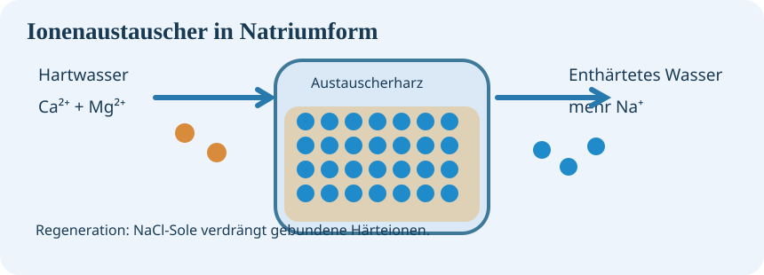

Drei Lernmodule – dein 90-Minuten-Lernpfad
Du kannst die Module nacheinander oder einzeln bearbeiten. Lies, probiere die interaktiven Modelle aus und löse die Aufgaben. Jede Aufgabe hat einen eigenen start- und pausierbaren Timer. Nach jedem Modul folgt eine gemeinsame Sicherung mit der Lehrkraft. Am Ende jedes Moduls gibt es einen Selbsttest mit Rückmeldung.
Diese Seite funktioniert unabhängig von mebis. Sie kann auch als Ersatz dienen, falls die Schulplattform vorübergehend nicht erreichbar ist.
01 · Wasserhärte

Calcium, Magnesium, Härtebereiche, Einheiten und Konsequenzen im Gebäude.
Modul Wasserhärte öffnen →02 · pH-Wert

pH-Skala, Einordnung von Messwerten, logarithmische Unterschiede und ein Praxisfall.
Modul pH-Wert öffnen →03 · Trinkwasserbehandlung

Filtration, Dosierung, Ionenaustausch, Regeneration und Anlagenstörung.
Modul öffnen →So lernst du damit
1. Arbeite die Aufgaben selbstständig durch. 2. Verändere die Regler und beschreibe deine Beobachtung. 3. Diskutiere mindestens eine Begründung mit deiner Lernpartnerin oder deinem Lernpartner. 4. Prüfe dich mit dem Selbsttest.
Hinweis: Texte und Fortschritte werden nur in deinem Browser auf diesem Gerät gespeichert (sofern Browser-Speicherung erlaubt ist). Es gibt keine Anmeldung und keine automatische Übermittlung an die Lehrkraft. Für eine bewertete Lernstandserhebung kann zusätzlich ein Test in mebis genutzt werden.